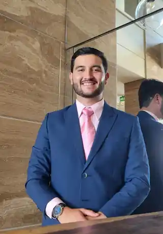

Proteger
Lo que has construido y la estabilidad de quienes dependen de ti.
Acompaño a profesionales, familias y emprendedores a proteger lo que han construido, planificar con claridad e invertir con una estrategia alineada con sus objetivos.

Lo que has construido y la estabilidad de quienes dependen de ti.
Responsabilidades, objetivos y prioridades dentro de una ruta clara.
Con una estrategia coherente con tu horizonte y tolerancia al riesgo.
Cada decisión y cada cambio importante de tu vida financiera.
Responsabilidades, metas, riesgos, liquidez, capacidad de ahorro y visión de largo plazo. A partir de ahí, trazamos una hoja de ruta financiera clara y alineada con tus objetivos personales y familiares.
Un seguro, una cuenta de inversión o un ahorro mensual pueden ser útiles. El verdadero valor aparece cuando todos cumplen una función dentro de la misma estrategia.
No se trata de llenar formatos ni de comenzar comprando. Se trata de entender, priorizar y actuar con criterio.
Conocemos tu situación, objetivos e inquietudes principales.
Identificamos riesgos, oportunidades, liquidez y capacidad financiera.
Definimos prioridades y una hoja de ruta conectando protección y construcción de capital.
Implementamos, revisamos y ajustamos la estrategia cuando sea necesario.
La estrategia cambia según tu etapa, responsabilidades, capacidad de ahorro y horizonte. Estas son algunas de las conversaciones más frecuentes.
Preparar financieramente a tu familia ante situaciones inesperadas.
Estabilidad y continuidadCrear un sistema de ahorro e inversión orientado a objetivos concretos.
Ahorro con propósitoConstruir desde hoy mayor independencia financiera para el futuro.
Largo plazoPlanificar anticipadamente los recursos para la educación de tus hijos.
Metas familiaresProteger ingresos, ordenar prioridades y conectar finanzas personales y empresariales.
Ingresos variablesOrganizar beneficiarios, protección y transmisión patrimonial con mayor claridad.
Continuidad patrimonialResponde diez preguntas rápidas. El resultado es orientativo y busca ayudarte a identificar temas que vale la pena revisar.
Ayudo a profesionales, familias y emprendedores a tomar decisiones más acertadas en materia de protección, ahorro e inversión.
Antes de hablar de productos, me concentro en comprender la situación actual de cada persona: responsabilidades, metas, riesgos, liquidez, capacidad de ahorro y visión de largo plazo. A partir de ahí, ayudo a trazar una hoja de ruta financiera clara y alineada con sus objetivos personales y familiares.
Actualmente formo parte de Fides Financial by Goque Group, donde acompaño procesos de planificación financiera, protección e inversión con una perspectiva integral y de largo plazo.
En Finanzas con Esco comparto ideas sobre finanzas personales, mercados, protección e inversión de una manera sencilla, práctica y accesible.
La conversación inicial de 30 minutos es un espacio exploratorio para conocer tu situación, resolver preguntas generales y evaluar si tiene sentido avanzar juntos.
No. El proceso parte de entender riesgos, objetivos, liquidez y capacidad financiera. Las alternativas se evalúan después, según la función que deban cumplir dentro de la estrategia.
No necesariamente. La planificación también sirve para organizar prioridades, fortalecer la protección y construir capacidad de ahorro de manera progresiva.
No. Dependen del perfil, objetivos, horizonte, responsabilidades, capacidad financiera y tolerancia al riesgo de cada persona.
Sí. Una revisión puede ayudar a entender qué función cumple cada producto, qué brechas permanecen y cómo encaja dentro de tu estrategia general.
Si estás buscando organizar tu vida financiera, proteger lo que has construido o entender cómo invertir con mayor claridad, esta conversación puede ser un buen punto de partida.
Agenda una conversación inicial ↗